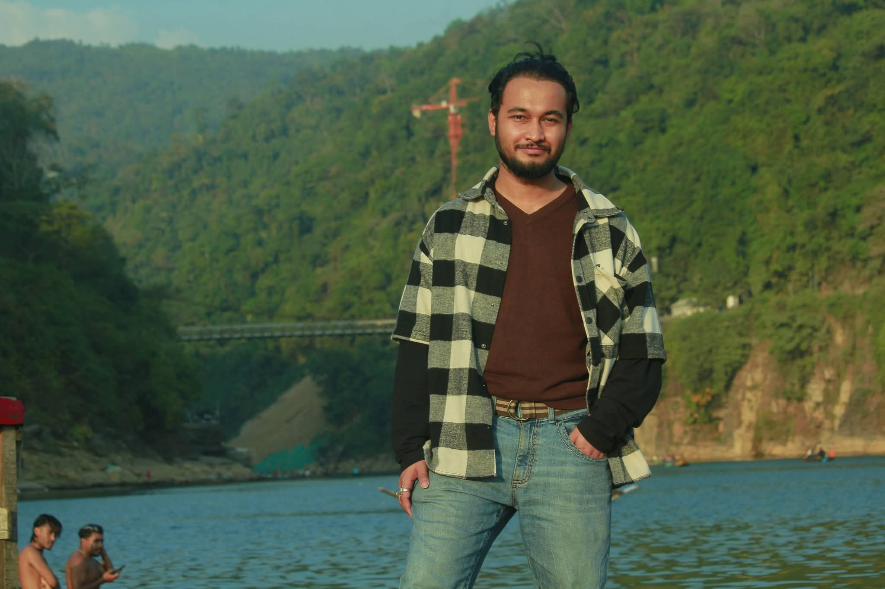

My research focuses on Medical Image Analysis, Ambiguous Segmentation, Aleatoric Uncertainty, Probabilistic Deep Learning, Diffusion Models, Generative AI, Variational Autoencoders, Normalizing Flows, Classical Image Segmentation, and Active Contour Models.

My research lies at the intersection of computer vision, medical image analysis, and probabilistic deep learning, with a particular focus on uncertainty-aware and ambiguity-aware medical image segmentation.
I have been teaching in the Department of Electrical and Electronic Engineering at Green University of Bangladesh for approximately two years.
During this period, I have taught several undergraduate theory courses covering signal processing, communication systems, semiconductor devices, electromagnetics, microprocessors, numerical methods, and introductory electrical engineering.